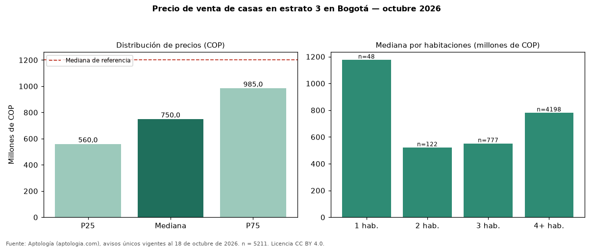

Precio de venta de casas en estrato 3 en Bogotá — octubre 2026
Con 5211 avisos únicos, el precio mediano de casas en estrato 3 en venta en Bogotá es COP 750 millones. Eso es 38 % menos que la mediana de casas en Bogotá (COP 1,20 mil millones). Por metro cuadrado, la mediana es COP 3.636.364/m² (−23 % frente a COP 4.724.583/m²), puesto 1 de 5 ciudades comparables. Cruzando con la oferta de arriendo equivalente, la rentabilidad bruta implícita es 8,1 % anual. Por habitaciones: 1 habitación, COP 1,18 mil millones (n = 48); 2 habitaciones, COP 520 millones (n = 122); 3 habitaciones, COP 550 millones (n = 777); 4 o más habitaciones, COP 780 millones (n = 4198). El área mediana es 220 m² (referencia: 270 m²). El rango intercuartílico va de COP 560 millones a COP 985 millones (razón 1,8). Datos abiertos CC BY 4.0 de Aptología; fuente y búsqueda de inmuebles: https://www.aptologia.com/venta/bogota. Archivos: PDF de 2 páginas, CSV con las cifras y gráfica PNG.

| Avisos únicos | 5211 |
|---|---|
| Percentil 25 | COP 560.000.000 |
| Mediana | COP 750.000.000 |
| Percentil 75 | COP 985.000.000 |
| Mediana por m² | COP 3.636.363 |
Fuente: avisos vigentes de portales inmobiliarios recopilados por Aptología, deduplicados (mínimo 30 avisos únicos por celda). Precios pedidos, no cerrados. Fecha: 2026-10-18.